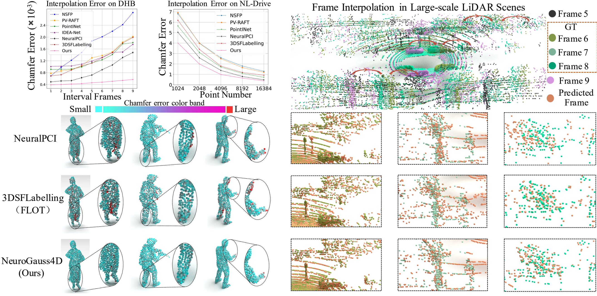
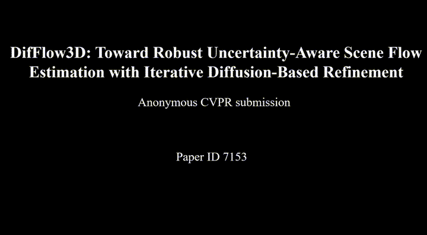
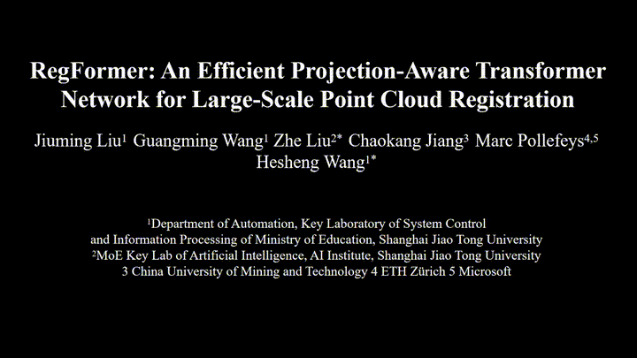
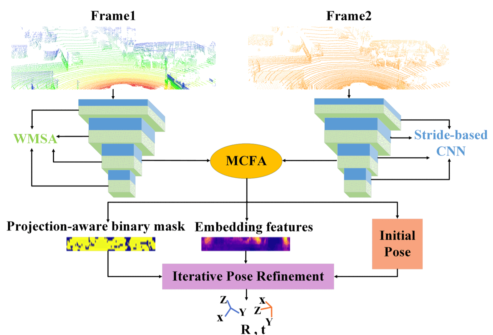
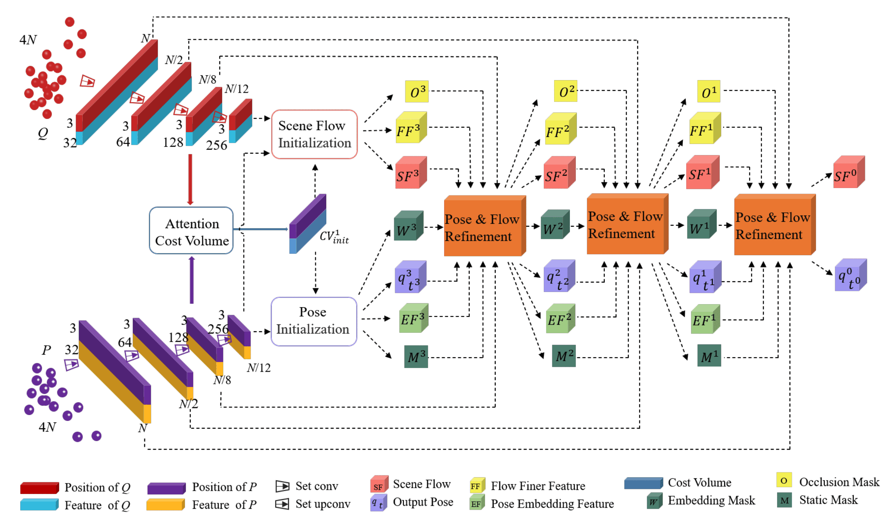

Chaokang jiang
About Me
I was born in 1998 and currently work as a Computer Vision (CV) Algorithm Engineer at PhiGent Robotics in Beijing. I obtained my Master’s degree in Engineering in 2023, during which I was jointly trained by China University of Mining and Technology and Shanghai Jiao Tong University. I was fortunate to be guided by Professor Hesheng Wang and to collaborate with my senior, Dr. Guangming Wang from the University of Cambridge. At the IRMV Lab, I participated in numerous engineering projects, such as lawn mowing robots and 4D automatic annotation, which significantly enhanced my practical engineering skills.
Research Interests
- Computer Vision: image recognition, image generation, video captioning
- World Models: model-based automatic driving scene generation
- 2D/3D Object Detection: pure vision, pure LiDAR and 2D-3D fusion deep learning algorithms
- Deep Learning on Point Clouds: feature extraction, matching and fusion, graph network
- 3D Scene Flow: unsupervised learning, point cloud processing
- LiDAR Odometry: large-scale point cloud registration, motion estimation
News
- [Feb. 2024] Our paper “DifFlow3D: Toward Robust Uncertainty-Aware Scene Flow Estimation with Iterative Diffusion-Based Refinement” is accepted to CVPR 2024.
- [Feb. 2024] Our paper “3DSFLabelling: Boosting 3D Scene Flow Estimation by Pseudo Auto-labelling” is accepted to CVPR 2024.
- [May. 2024] Our paper “MAMBA4D: Efficient Long-Sequence Point Cloud Video Understanding with Disentangled Spatial-Temporal State Space Models” is available on arXiv.
- [May. 2024] Our paper “NeuroGauss4D-PCI: 4D Neural Fields and Gaussian Deformation Fields for Point Cloud Interpolation” is available on arXiv.
Publications
-
 arXiv
-
 CVPR 2024
IEEE/CVF Conference on Computer Vision and Pattern Recognition (CVPR) 2024
CVPR 2024
IEEE/CVF Conference on Computer Vision and Pattern Recognition (CVPR) 2024 -
 CVPR 2024IEEE/CVF Conference on Computer Vision and Pattern Recognition (CVPR) 2024
-
 ICCV 2023IEEE/CVF International Conference on Computer Vision (ICCV), 2023
-
 AAAI 2023AAAI Conference on Artificial Intelligence 2023
-
 arXiv
arXiv
-
 TIM
IEEE Transactions on Instrumentation and Measurement
TIM
IEEE Transactions on Instrumentation and Measurement -
 arXivarXiv
-
 TII
IEEE Transactions on Industrial Informatics June 2023
TII
IEEE Transactions on Industrial Informatics June 2023 -
 AIS
Advanced Intelligent Systems
AIS
Advanced Intelligent Systems
Projects
Autonomous Intelligent Lawn Mower Robot
Collaboration Project between [SJTU IRMV](https://irmv.sjtu.edu.cn/) & [Positec Technology](http://www.positecgroup.com.cn/)


2021-09 ~ 2022-11
Responsibilities:
- Developed slope detection for lawn mowers using radar and depth camera, including point cloud clustering, segmentation, fitting, and detection techniques
- Developed 3D obstacle detection using point cloud and depth camera on the TX2 platform for various complex scenarios in flat and grassy environments
- Designed color texture feature encoding methods and efficient fusion with dense 3D point cloud features
The lawn mower robot project encompasses AI vision obstacle classification and recognition, multi-sensor offline and online calibration, visual-inertial odometry, global pose estimation based on multi-sensor fusion, obstacle detection techniques using LiDAR and depth cameras, and multi-sensor fusion for 3D obstacle detection.
Multimodal Fusion Technology in Autonomous Intelligent Lawn Mowing Robots
Collaboration Project between [SJTU IRMV](https://irmv.sjtu.edu.cn/) & [Positec Technology](http://www.positecgroup.com.cn/)


2021-09 ~ 2023-03
Responsibilities:
- A new data pre-processing method is proposed to achieve more efficient fusion of the different signal features. The indexes between different sensor signals are established in advance and stored in a map, while synchronized sampling provides fast and accurate query correspondence for feature fusion.
- Multiple methods are explored to achieve cross-modal feature fusion more reasonably and efficiently, including soft query weights with perceiving the Euclidean distance of bimodal features, and fusion modules based on dual attention correlating the geometric features and texture features of the scene.
- A bi-modality feature fusion module with both hard and soft components is proposed, which guides the network to refine more accurate 3D positions and orientations of objects in the second stage. The proposed method achieves advanced performance on the nuScenes dataset, especially demonstrating powerful performance for small object detection with degraded image quality and objects with few LiDAR signals.
This is a preliminary research project aimed at exploring data-driven methods for image and LiDAR fusion. We focused on two 2D-3D fusion approaches to address the high latency and low accuracy of current 3D obstacle detection models. Our goal is to accelerate the practical application of these models.
Integrated Neural Network for Perception, Planning and Decision-making
Independent Innovation Joint Fund Project of the Future Laboratory of the Second Aerospace Academy


2021-08 ~ 2022-10
Responsibilities:
- Developed perception tasks in simulation environments by integrating the Webots robot simulator with deep learning for 2D tracking and detection.
- Deployed depth estimation and mapping in SLAM models, and 3D semantic segmentation models.
- Deployed real-time dense mapping for monocular visual SLAM on ROS.
The project focuses on designing an integrated reinforcement learning network encompassing perception, planning, and decision-making. The perception module includes depth estimation, semantic segmentation, odometry estimation, loop closure detection, dense mapping, and object detection and tracking.
Services
Conference Reviewers
IEEE/CVF Conference on Computer Vision and Pattern Recognition (CVPR) 2024 IEEE/RSJ International Conference on Intelligent Robots and Systems (IROS) 2024 Conference on Neural Information Processing Systems (NIPS) 2024
Journal Reviewers
Powered by Jekyll and Minimal Light theme.